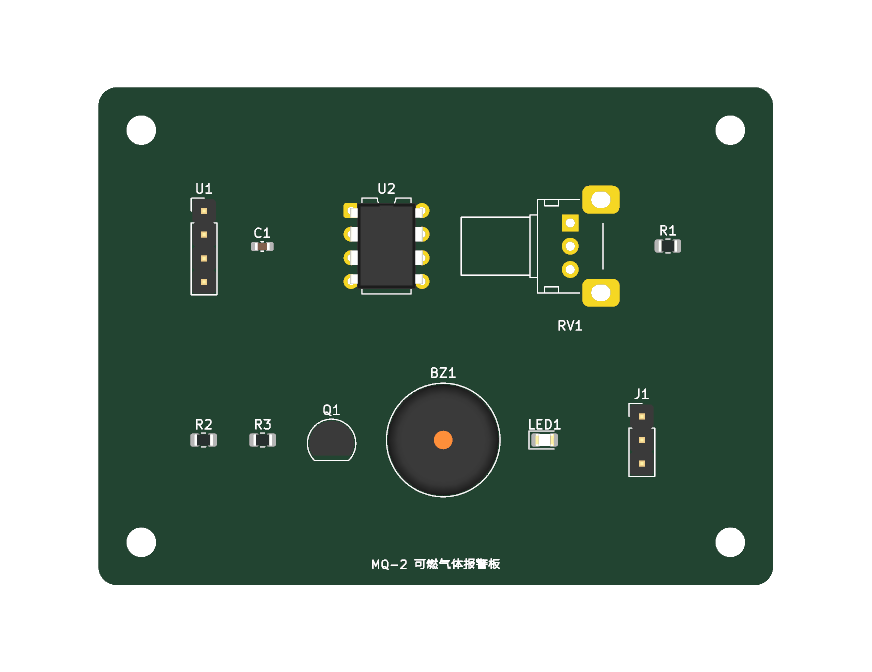
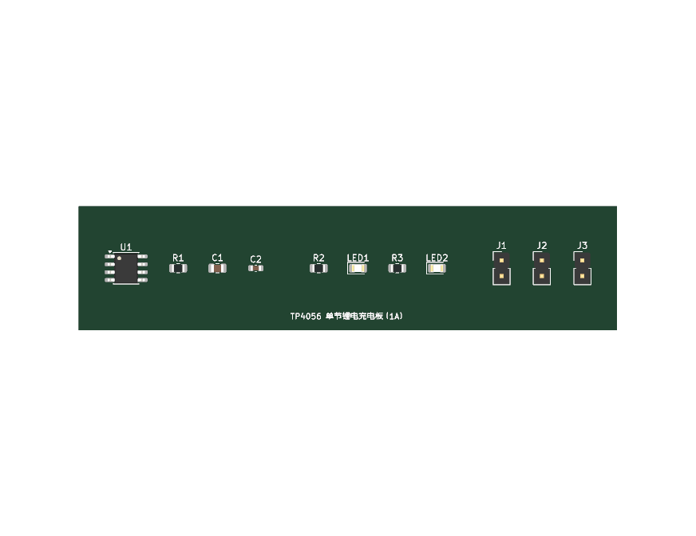
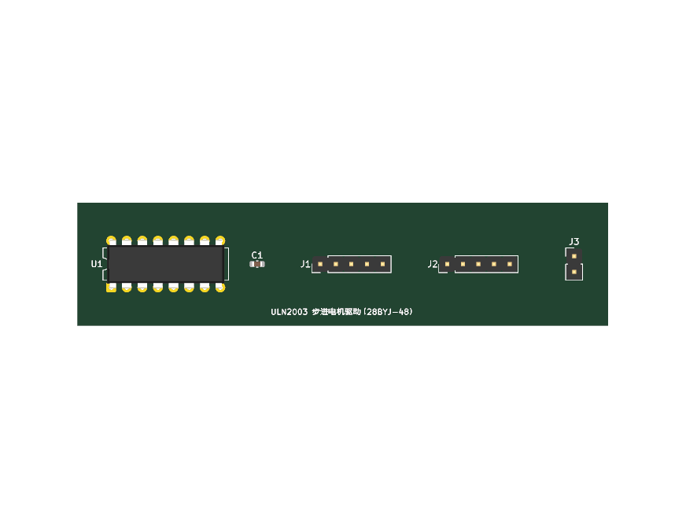
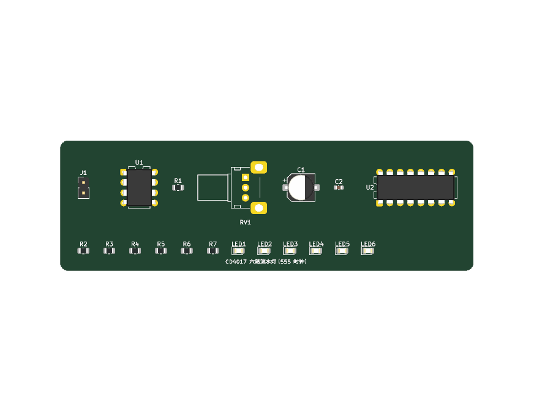

电源
5V 转 3.3V LDO 稳压
AMS1117-3.3 线性稳压，含输入输出滤波电容与接线端子
AMS1117-3.310uF22uF100nF5V3.3V
ldo_3v3每一块都能一键生成完整的 KiCad 工程：原理图（真实 wire / junction）+ PCB（官方封装焊盘与 3D 模型） + BOM + 网表。左侧「板子库」可按分类筛选套用，也可以直接用一句话描述需求让 NLU 自动选板。




AMS1117-3.3 线性稳压，含输入输出滤波电容与接线端子
ldo_3v3经典 TO-220 三端稳压，100uF 输入输出储能 + 100nF 高频去耦
ldo_5v_7805开关降压方案：33uH 储能电感 + SS34 续流肖特基 + 反馈取样
buck_lm25961A 恒流恒压充电，1.2k 设定电流，充电/充满双色状态灯
tp4056_chargerLM7805 一级降压 + AMS1117 二级稳压，单片机与传感器常用供电
power_5v_3v3电源指示灯 + 限流电阻，元件最少，适合入门与快速验证
led_indicatorATmega328P 最小系统 + 晶振 + 复位 + LED 闪烁，完整 MCU 电路
led_blink555 多谐振荡器闪灯，电阻电容决定频率，纯硬件无需编程
led_flash_555555 提供时钟 + 4017 十进制计数，六路 LED 依次点亮，可用电位器调速
led_chaser_4017共阴 RGB 灯珠，红绿蓝三路独立限流，四线接口直接接 MCU
rgb_led_boardAO3400 低边开关驱动 12V 灯带，支持 PWM 调光，栅极带下拉与滤波
led_strip_mosfetDHT11 温湿度模块，10k 数据上拉 + 100nF 去耦 + 电源指示
dht11_sensor单总线数字测温，4.7k 上拉电阻，TO-92 直插封装
ds18b20_sensor超声波测距模块，Echo 5V 输出用 1k/2k 分压成 3.3V 电平
hcsr04_ultrasonic光敏电阻分压 + LM393 比较，电位器调阈值，输出带指示灯
ldr_light_switch可燃气体检测，LM393 比较阈值后驱动蜂鸣器与红灯，可输出报警信号
mq2_gas_alarmS8050 三极管驱动 SRD-05VDC 继电器，1N4148 续流 + 吸合指示灯
relay_driver达林顿阵列驱动 28BYJ-48 五线步进电机，四路输入直接接 MCU
uln2003_stepper有源蜂鸣器 + NPN 驱动，基极限流下拉、续流二极管、状态灯齐全
buzzer_alarm音频功放，电位器调音量，输入输出耦合电容 + 电源旁路
lm386_ampESP-01S 转接板：AMS1117 3.3V 供电、复位按键、串口与使能上拉
esp01_wifiRS-485 收发器，120R 终端电阻 + 总线偏置，DE/RE 方向控制引出
max485_rs4850.96 寸 SSD1306 屏座，4.7k I2C 上拉与去耦电容
i2c_oled